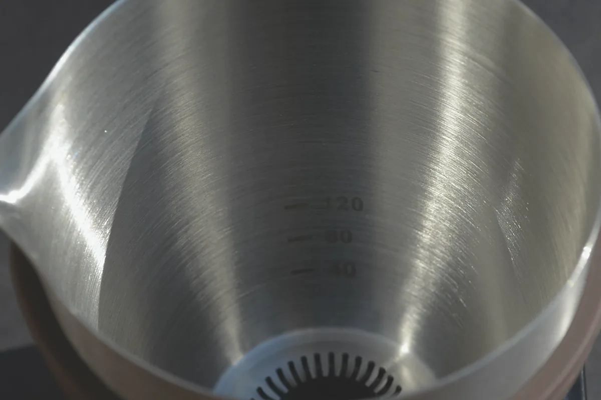
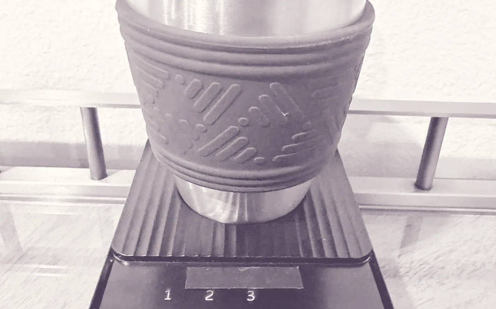
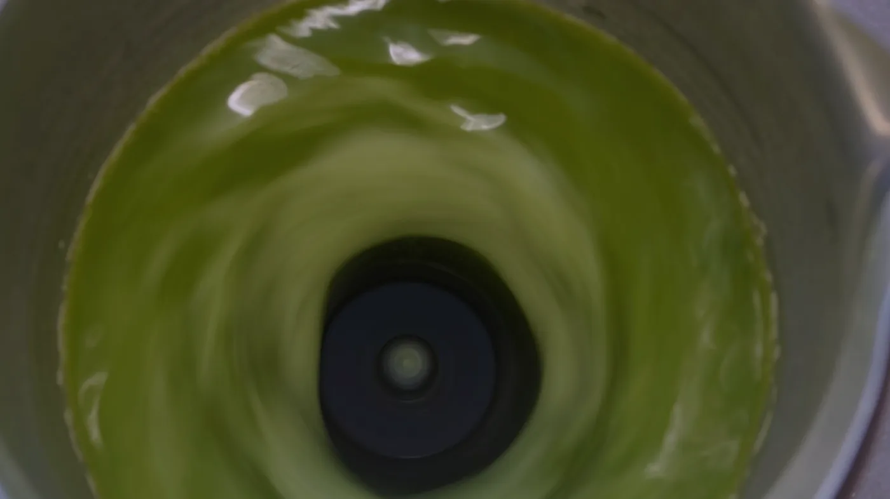
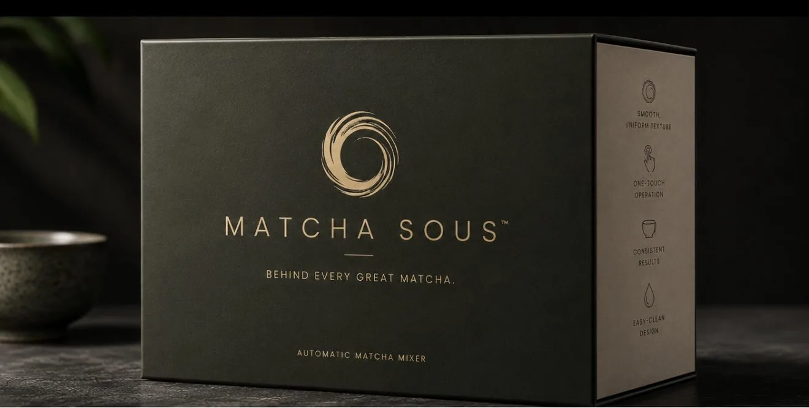

Born behind a café bar. Made for your counter.
A hundred bowls a shift taught us how rarely two taste the same. So we built the one that does — then refined it until it belonged at home.
The Original Hands-Free Matcha Mixer.
Smooth, consistent matcha at the press of a button.



About thirty seconds, hands-free. The full method →

Shaded for weeks, picked by hand, ground by stone. The last thirty seconds deserve the same care.
A magnet turns the mixing disc beneath the cup. Nothing else touches the tea.
Calibrated speeds hold the fast, shallow motion that builds microfoam.
Press it and step away. Sous completes the cycle and stops.
Koicha-style tea, or folding syrup into a finished bowl.
Usucha at full froth. The one you'll press most mornings.
A concentrate dense enough to stand up to milk and ice.
Or dial any of eighteen speeds by hand.
A hundred bowls a shift taught us how rarely two taste the same. So we built the one that does — then refined it until it belonged at home.


The ceremony, preserved.
The Sous, in service of it.
2 g, 80 ml at 80°C, Preset II. Fine standing foam.
3 g on Preset III, then steamed milk over the top.
A 40 ml concentrate poured over a full glass of ice.
Make it ahead. It keeps in the fridge through the week.

First Edition · Matte Black / Stainless
A frother spins a whisk head through the liquid on a shaft. Sous turns a disc magnetically from beneath a sealed stainless cup — the vortex mixes from the bottom up, at a calibrated speed, for a set time. Nothing you hold, nothing that drifts.
Sifting always helps — it breaks the clumps pressing forms in the tin. Sous suspends the powder either way; sifted matcha simply gets there faster and finishes smoother.
Yes. Ceremonial or culinary, any origin. Fill water to an etched 40, 80 or 120 ml guide and choose the preset that suits the drink.
Both. Whisk with a little water first — the upper speeds build a rich concentrate — then pour it over hot milk or a full glass of ice.
About thirty seconds. The timer ends it for you.
Rinse the stainless cup and wipe the base with a damp cloth. Do not submerge the base. No seals or sockets to mind.
The mixer base, the stainless matcha cup, a power adapter, a USB-C cable and the user manual — in the presentation case.
One year against defects in materials and workmanship, plus 30-day returns. Write to care@matchasous.com and we will make it right.
Of course — many owners do, on the mornings that allow for it. Sous is there for the ones that don't.
Matcha Sous — $150, free shipping, 30-day returns.